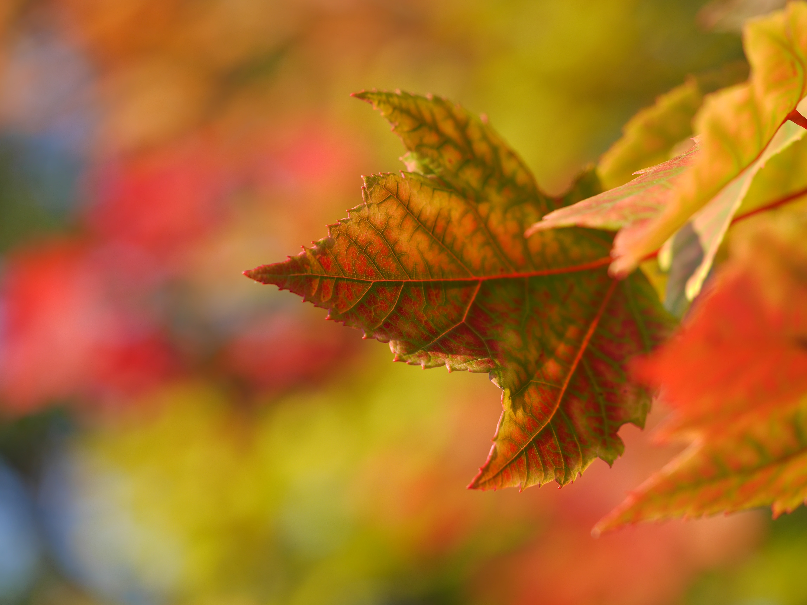
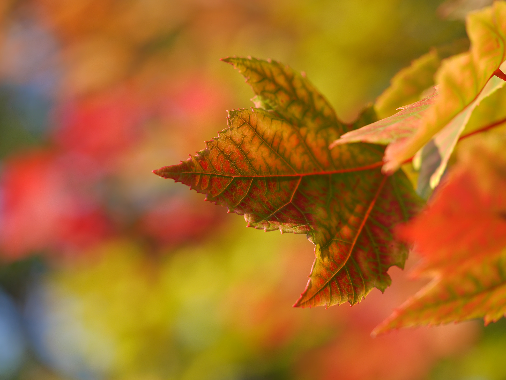

fall season tips for plants
As the vibrant colors of summer gradually fade into the golden hues of autumn, it's essential to prepare your garden for the seasonal shift. The fall season brings unique challenges and opportunities for plant care, ensuring that your garden remains robust and ready for the approaching winter. By implementing a few simple strategies and tips, you can help your plants thrive during this transitional period. Here are some invaluable fall season tips to keep your plants healthy and vibrant as the weather cools.
 
